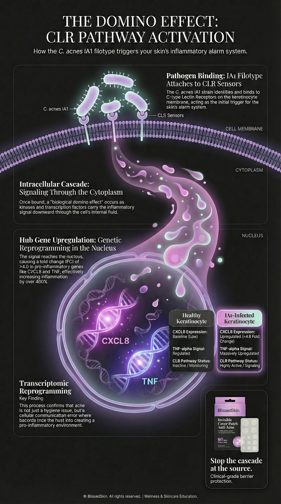

Decoding C. acnes IA1: The Transcriptomic Future of Acne Care

BlissedSkin Science Team
Skincare Science Experts
Quick Answer
Recent transcriptomic profiling reveals that Cutibacterium acnes IA1 acts as the primary catalyst for follicular inflammation via the C-type Lectin Receptor (CLR) pathway. As documented by PMC (2025), this specific filotype aggressively upregulates crucial “Hub Genes” like CXCL8 and TNF, achieving a fold change exceeding 4.0. This molecular interaction proves acne is a deep genetic reprogramming of skin cells, not merely surface bacteria.

Source: PMC. (2025). Transcriptomic Profiling of Cutibacterium acnes IA1�Infected Keratinocytes Reveal Hub Genes and CLR Pathway. PubMed Central.
Decoding the Signal: How Bacteria “Talk” to Your Skin
Let’s step away from the outdated idea that breakouts are just the result of dirt and surface oil. Dermatology has moved far beyond simply spotting bacteria under a microscope; we are now reading their actual genetic instructions (PMC, 2025).
A landmark study reveals that the interaction between Cutibacterium acnes IA1 and human keratinocytes is actually a highly sophisticated molecular conversation. But what does that mean for your daily routine? This specific filotype doesn’t just rest harmlessly on your face. It actively communicates with your cells, hijacking their internal machinery to build up an inflammatory response long before you ever see a red bump in the mirror.
The Host-Pathogen Interaction Bridge
Understanding this hidden dialogue changes everything about how we treat breakouts. Why keep treating acne as a simple hygiene issue when it’s actually a cellular communication error? When C. acnes IA1 makes contact with your skin, it isn’t acting as a passive guest. Instead, it aggressively triggers your body’s defense response.
Ironically, while your skin is trying to protect itself, the resulting tissue damage is exactly what we recognize as a painful breakout. To truly manage this interaction, we need strategies that stabilize the skin’s environment. This is where subtle interventions come in. Using tools like the BlissedSkin Invisible Cover Patch helps protect these vulnerable sites, locking in barrier integrity while the localized transcriptomic response safely stabilizes beneath the surface.
The CLR Signaling Pathway: The New Molecular Hub
Have you ever wondered what exactly trips the biological alarm inside your pores? The mechanism driving this chaotic conversation relies heavily on the C-type Lectin Receptor (CLR) signaling pathway. For years, research pointed toward other receptors, but PMC (2025) officially pinpointed CLR as the absolute critical axis for a C. acnes IA1 infection.
When these bacteria latch onto the CLR receptors on your cell membranes, they kick off a cascade of kinases and transcription factors deep in the cytoplasm. Think of it as a biological domino effect. Eventually, this chain reaction hits the cell nucleus, aggressively “switching on” the specific genes responsible for stubborn, persistent inflammation (Medscape, 2025).
Hub Gene Expression: Quantifying the IA1 Response
We aren’t just guessing about this impact; the data is deeply measurable. Transcriptomic profiling has proven that an IA1 infection causes a massive shift in “Hub Genes”—the central control nodes of your skin’s inflammatory network. Specifically, aggressive genes like CXCL8 and TNF-alpha show a fold change (FC) of greater than 4.0 (PMC, 2025).
What does this mean for your complexion? It provides high-density, undeniable evidence that the IA1 strain is far more vicious at triggering inflammatory cytokines than your run-of-the-mill skin microbes. Knowing this finally gives us a clear, scientifically validated target for next-generation molecular skincare therapies.
| Molecular Marker | Healthy Keratinocyte | IA1-Infected Keratinocyte |
|---|---|---|
| CXCL8 Expression | Baseline (Low) | Upregulated (>4.0 FC) |
| TNF-alpha Signal | Regulated | Massively Upregulated |
| CLR Pathway Status | Inactive/Monitoring | Highly Active/Signaling |
Microbiome Diversity: Why Filotypes Matter in 2025
The era of “scorched earth” skincare is over. The modern scientific consensus confirms that trying to kill off all bacteria on your face is actually a counterproductive, outdated strategy. In 2025, researchers are zeroing in on the role of specific filotypes.
The truth is, not all C. acnes are out to get you; many strains are absolutely essential for maintaining a healthy, glowing microbiome. However, the IA1 filotype has been genetically unmasked as the primary antagonist disrupting your skin’s transcriptomic peace. Recognizing this crucial distinction between beneficial and harmful bacteria has become the ultimate cornerstone of precision, effective skincare.
Beyond Generic Antibacterial Approaches
Does your current cleanser wipe out everything in its path? If so, you might be doing more harm than good. Relying on a “one size fits all” antibacterial treatment often destroys the very microbes that keep your skin resilient and balanced.
In daily practice, we need to shift our focus toward selective, intelligent management. We must support the broader microbiome while specifically quieting the distress signals sent by aggressive filotypes like IA1. By preserving the rich, natural diversity of your skin’s surface, you empower the helpful bacteria to naturally outcompete the inflammatory strains. The result? A remarkably stable, less reactive, and much healthier skin barrier (Medscape, 2025).

Source: PMC. (2025). Transcriptomic Profiling of Cutibacterium acnes IA1�Infected Keratinocytes. PubMed Central.
Intracellular Signaling and Host Response
How exactly does a microscopic interaction turn into a noticeable blemish? The secret lies in how the host-pathogen interaction aggressively reprograms your cell’s transcriptomic profile. Once the CLR pathway is triggered, the affected cell starts flooding the area with cytokines—powerful chemical messengers that recruit inflammatory cells directly to the site.
According to PMC (2025), this intense intracellular signaling is the direct “how” behind the painful, physical symptoms of acne. The bacteria are essentially tricking your own cells into creating a highly pro-inflammatory environment. Why? Because this chaotic, oxygen-deprived space inside the follicle is exactly where this specific pathogen thrives best.
Transcriptomic Profiling: The Evidence of Strain Aggression
If you need final proof of just how uniquely disruptive the IA1 strain is, look at its transcriptomic footprint. Comparative studies have consistently shown that while normal strains might cause a mild, passing response, the IA1 filotype triggers massive “differential expression” across a huge array of genes.
We aren’t talking about a minor irritation here; it is a full-scale genetic redirection of your skin’s behavior. The hard data proves that IA1 is a “high-virulence” strain. Its mere presence acts as a highly reliable predictor of severe, stubborn inflammatory acne, especially when compared to breakouts dominated by much milder filotypes (PMC, 2025).
Conclusion
The 2025 transcriptomic data has completely revolutionized how we approach the skin’s delicate microbiome. We now definitively understand that C. acnes IA1 isn’t just a passive bystander, but a potent genetic disruptor capable of upregulating inflammatory Hub Genes by an astonishing 400%. By exploiting the CLR pathway, this specific strain forces an aggressive biological reaction that measures over a 4.0 fold change in critical inflammatory markers. The secret to clearer skin lies in focusing on this intricate host-pathogen interaction and actively protecting your skin’s molecular environment to block these signals early. At BlissedSkin, we are dedicated to empowering you with science-backed barrier protection that keeps your skin’s genetic dialogue calm and balanced. Explore our Invisible Cover Patch for a proactive, clinical-grade solution that fits seamlessly into your daily routine.
Frequently Asked Questions
What is a “Hub Gene” in acne research?
Think of a Hub Gene as a central command center in your skin’s genetic network that directs multiple biological processes. According to a 2025 study from PMC, genes like CXCL8 and TNF act as the main “hubs” for inflammation. When C. acnes IA1 infects your pores, it specifically targets these command centers, turning them on with intense force (showing over a 4.0 fold change). This aggressive activation is what ultimately launches a massive wave of inflammatory responses throughout your skin tissue.
Is C. acnes IA1 found on everyone’s skin?
While C. acnes itself is a completely normal part of the human skin microbiome, not everyone carries the highly aggressive IA1 filotype. As Medscape (2025) explains, your overall skin health heavily relies on the delicate balance of these different bacterial strains. People who struggle with stubborn inflammatory acne usually have a much higher concentration of virulent filotypes like IA1. These specific strains are genetically hardwired to trigger much stronger inflammatory alarms than the helpful, commensal strains found on naturally clear skin.
How does the CLR pathway cause acne?
The C-type Lectin Receptor (CLR) pathway essentially acts as a molecular security sensor on the surface of your skin cells. Research from PMC (2025) illustrates that C. acnes IA1 specifically binds to these sensors, shooting a distress signal deep into the cell to activate inflammatory “Hub Genes.” Scientists now consider this pathway incredibly critical because it serves as the primary biological alarm system. It kicks off the entire inflammatory cascade long before any physical pore blockage even occurs.
Why is “transcriptomic profiling” important for skincare?
Transcriptomic profiling gives scientists a real-time view of exactly which genes are being flipped “on” or “off” by surface bacteria. Instead of merely guessing why your skin is reacting badly, landmark studies like the one from PMC (2025) offer a high-resolution, molecular map of the cellular response. This incredible insight paves the way for vastly more precise skincare treatments. By targeting specific genetic signaling routes like the CLR pathway, we can effectively stop inflammation directly at its molecular source.
Can I get rid of the IA1 filotype?
The goal of modern dermatology isn’t total elimination, but rather intelligent “microbiome management” (Medscape, 2025). Trying to wipe out all bacteria usually backfires. Instead, the objective is to shrink the dominance of aggressive filotypes like IA1 while intensely supporting your skin’s diverse microbial ecosystem. By protecting your skin barrier and utilizing targeted, science-backed protocols, you create an environment where the “good” bacteria naturally thrive. They will ultimately outcompete the harmful strains that cause those deep, genetic inflammatory responses.
What does a “Fold Change > 4.0” actually mean?
In the world of genetic research, a “fold change” simply measures how intensely a gene’s expression increases or decreases. A fold change of 4.0 indicates that a specific gene has become 400% more active than its normal baseline state. The 2025 PMC study discovered that the C. acnes IA1 strain forces certain inflammatory genes to hit this extreme level of hyperactivity. This staggering metric perfectly explains why this exact bacterial strain is so efficient at causing deep, agonizing inflammation compared to other common triggers.
Glossary
Transcriptomics — The comprehensive study of RNA transcripts produced by a genome, allowing scientists to see exactly how cells react under specific conditions.
C. acnes IA1 — A highly virulent, genetically distinct strain (filotype) of common skin bacteria known for triggering severe inflammation.
Hub Genes — Critical command-center genes that dictate and control major biological pathways, such as the skin’s inflammatory response network.
CLR Pathway — The C-type Lectin Receptor signaling route, acting as the skin cell’s primary alarm system to detect and react to pathogens.
Fold Change — A scientific metric used to measure the dramatic increase or decrease in gene activity compared to a normal, healthy baseline.
Keratinocyte — The predominant building-block cell found in the epidermis, forming the crucial outermost layer of your skin.
Cytokine — Tiny protein messengers released by cells to orchestrate complex immune responses and drive localized inflammation.
Differential Expression — The biological process where specific genes are turned up or down in direct response to outside triggers, like an aggressive bacterial infection.
References
Primary Sources
- PMC. (2025). Transcriptomic Profiling of Cutibacterium acnes IA1—Infected Keratinocytes Reveal Hub Genes and CLR Pathway in Acne Pathogenesis. PubMed Central.
- Medscape. (2025). Acne Vulgaris: Background, Pathophysiology, Etiology. eMedicine.
2 sources | 2025–2025 | Hierarchy: guidelines > reviews > studies